Legends and colorbars in spatialdata-plot#
Every coloured plot needs a key. spatialdata-plot builds three kinds automatically: a categorical colour (named groups) gets a
legend, a continuous colour (a numeric range) gets a colorbar, and a multichannel image
gets a channel legend. show() places and styles the legend and colorbar; the channel legend is
switched on with render_images(channels_as_legend=True). By the end you should be able
to:
Place a categorical legend anywhere (
legend_loc) and restyle it (legend_fontsize,legend_fontweight,legend_fontoutline,legend_title), or bundle those inlegend_params.Control which categories appear with
na_in_legend.Place and style a colorbar with
colorbar/colorbar_params.Label a multichannel composite with
channels_as_legend.Combine keys across a multi-panel figure.
We use the real 10x Visium mouse-brain dataset from squidpy for the legend and colorbar, and the
Xenium cells fluorescence image for the channel legend — both cached on first use.
Setup#
import squidpy as sq
import spatialdata_plot # noqa: F401 # registers the .pl accessor
sdata = sq.datasets.visium_hne_sdata()
sdata
INFO Loading existing dataset from data/spatialdata/visium_hne_sdata.zarr
SpatialData object, with associated Zarr store: /Users/tim.treis/Documents/GitHub/spatialdata-plot/docs/notebooks/examples/data/spatialdata/visium_hne_sdata.zarr
├── Images
│ └── 'hne': DataTree[cyx] (3, 11757, 11291), (3, 5878, 5645), (3, 2939, 2822), (3, 1469, 1411)
├── Shapes
│ └── 'spots': GeoDataFrame shape: (2688, 2) (2D shapes)
└── Tables
└── 'adata': AnnData (2688, 18078)
with coordinate systems:
▸ 'global', with elements:
hne (Images), spots (Shapes)
1. The default categorical legend#
Colouring by a categorical column draws a legend automatically. cluster holds named brain regions;
we render the spots over the H&E image.
(
sdata.pl.render_images("hne")
.pl.render_shapes("spots", color="cluster")
).pl.show(legend_fontsize=6)
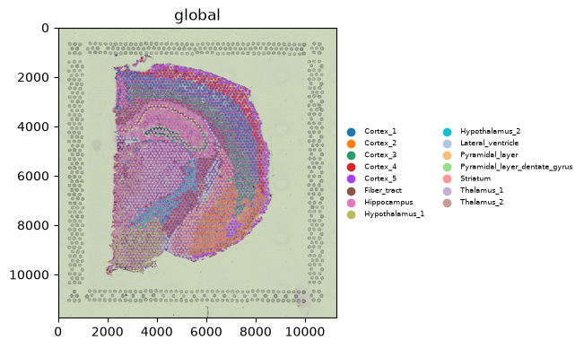
2. Placing the legend — legend_loc#
legend_loc takes any matplotlib location ("upper right", "lower left", "center left", …) or
"right margin" to park the legend outside the axes. The margin keeps the legend off the data; the
matplotlib locations place it on top. Here are four placements of the same plot.
for loc in ["right margin", "upper right", "lower left", "center left"]:
(
sdata.pl.render_images("hne")
.pl.render_shapes("spots", color="cluster")
).pl.show(legend_loc=loc, legend_fontsize=5, legend_title=loc)
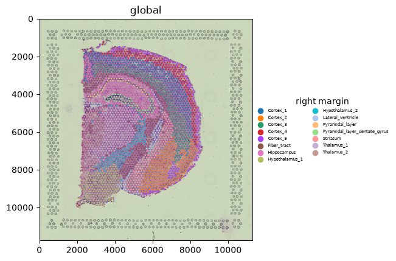
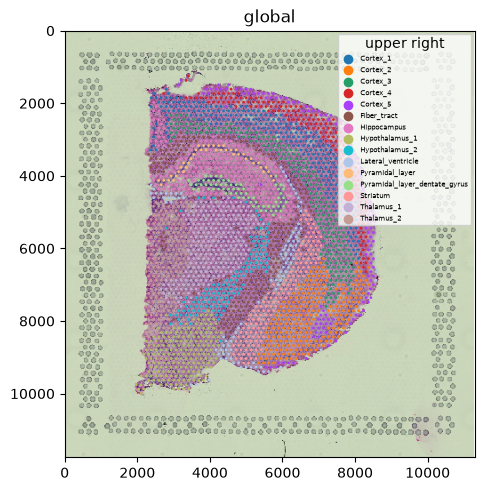
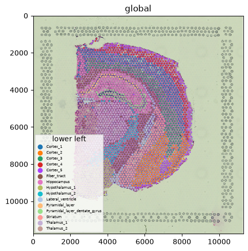
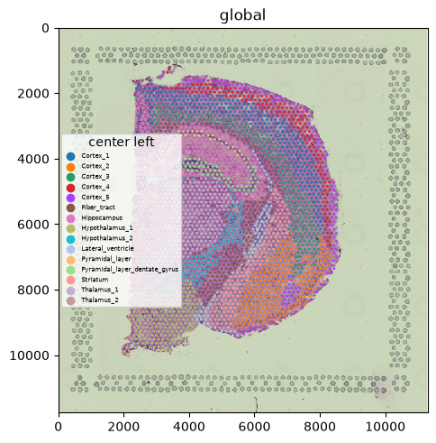
3. Restyling the legend#
legend_fontsize, legend_fontweight, and legend_fontoutline (a contrasting outline around the
text, useful over busy images) style the entries; legend_title names it.
(
sdata.pl.render_images("hne")
.pl.render_shapes("spots", color="cluster")
).pl.show(
legend_loc="lower left",
legend_fontsize=6,
legend_fontweight="bold",
legend_fontoutline=2,
legend_title="Region",
)
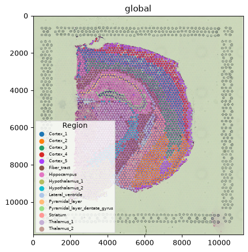
4. Hiding NA — na_in_legend#
groups subsets a categorical colour to the named categories; the remaining spots become NA, and
na_in_legend=False drops that NA entry from the key.
(
sdata.pl.render_images("hne")
.pl.render_shapes("spots", color="cluster", groups=["Cortex_1", "Cortex_2", "Hippocampus"])
).pl.show(na_in_legend=False, legend_fontsize=7)
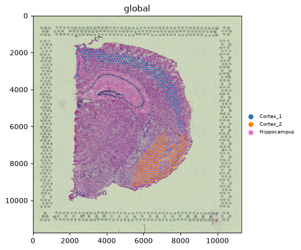
5. Bundling options — legend_params#
Instead of the flat legend_* kwargs you can pass one legend_params dict. Accepted keys:
location (or loc), fontsize, fontweight, fontoutline, na_in_legend; it overrides the
matching flat kwargs, and unknown keys raise an error.
Note legend_title is not among the accepted keys — keep it as a flat legend_title= kwarg.
(
sdata.pl.render_images("hne")
.pl.render_shapes("spots", color="cluster")
).pl.show(
legend_params={"loc": "right margin", "fontsize": 6, "fontweight": "bold"},
)
6. Continuous colours get a colorbar#
Colouring by a continuous column draws a colorbar instead of a legend. Here, total counts per
spot. colorbar=True is the default; pass colorbar=False to suppress it.
(
sdata.pl.render_images("hne")
.pl.render_shapes("spots", color="total_counts")
).pl.show()
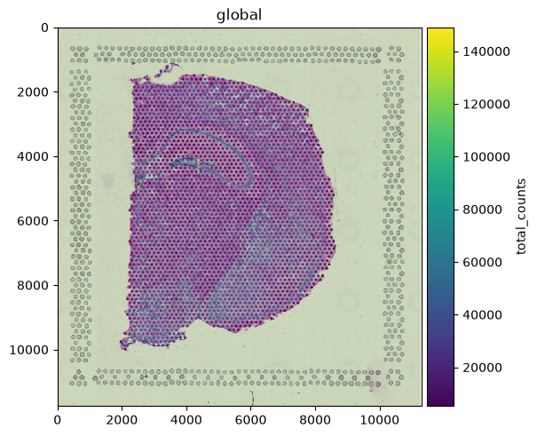
7. Placing and styling the colorbar — colorbar_params#
colorbar_params accepts label, loc (position — "right" by default, or "left"/"top"/
"bottom"), width (a fraction of the axes), pad, plus matplotlib colorbar keys. Set loc to move the bar; its orientation
follows the side automatically (horizontal for top/bottom). Passing only orientation does not
move it — the bar stays docked right.
(
sdata.pl.render_images("hne")
.pl.render_shapes("spots", color="total_counts")
).pl.show(
colorbar_params={"loc": "bottom", "label": "Total counts"},
)
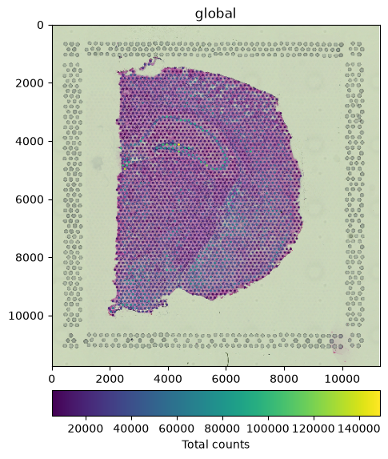
8. Labelling a multichannel image — channels_as_legend#
A multichannel image has no single colour to key, so channels_as_legend=True adds a channel
legend mapping each channel to its rendered colour. We switch to the Xenium cells fluorescence
image, whose channels are named markers (see the Multichannel & fluorescence images tutorial).
from spatialdata_plot import PercentileNormalize
cells = sq.datasets.cells()
# a single norm broadcasts to every channel, so this needs no hard-coded channel count
cells.pl.render_images(
"morphology_focus",
norm=PercentileNormalize(1, 99),
channels_as_legend=True,
).pl.show()
INFO Loading existing dataset from data/spatialdata/cells.zarr
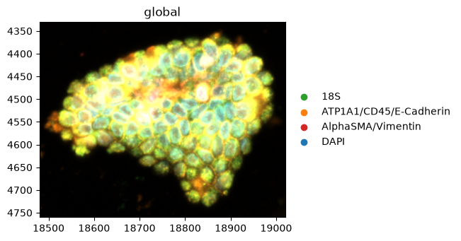
9. Several keys in one figure#
Passing a list to color= renders one panel per colouring (see the Multi-panel colouring tutorial).
Each panel gets the right key: a legend for the categorical panel, a colorbar for the continuous
one.
(
sdata.pl.render_shapes("spots", color=["cluster", "total_counts"])
).pl.show(ncols=2, legend_fontsize=5)
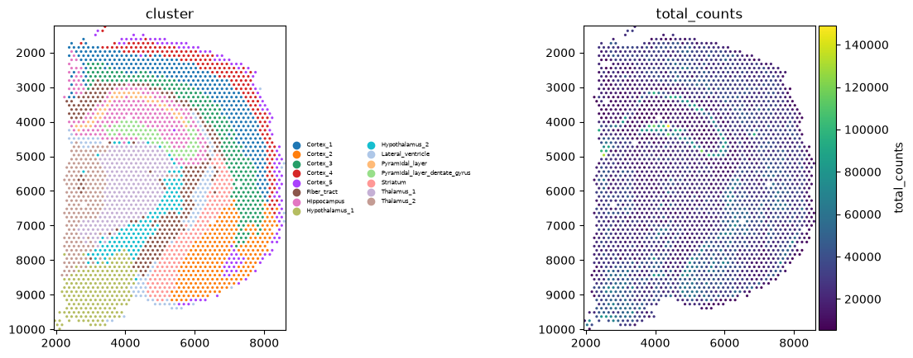
Summary#
Categorical colours draw a legend, continuous colours a colorbar, and multichannel images a channel legend (
channels_as_legend) — all automatically.Place the legend with
legend_loc(matplotlib locations or"right margin"), and style it withlegend_fontsize/fontweight/fontoutline,legend_title,na_in_legend; or bundle inlegend_params.Place and style the colorbar with
colorbar_params;loc("right"/"left"/"top"/"bottom") sets its position and the orientation follows.In a multi-panel
color=[...]figure each panel gets the appropriate key.
For reproducibility#
# ruff: noqa: F401, F811, I001, E402
# fmt: off
import warnings
import spatialdata_plot
%load_ext watermark
# fmt: on
%watermark -v -m -p spatialdata,spatialdata_plot,squidpy,matplotlib,numpy
Python implementation: CPython
Python version : 3.14.6
IPython version : 9.14.1
spatialdata : 0.7.3
spatialdata_plot: 0.4.1
squidpy : 1.8.2
matplotlib : 3.11.0
numpy : 2.4.6
Compiler : Clang 20.1.8
OS : Darwin
Release : 25.2.0
Machine : arm64
Processor : arm
CPU cores : 8
Architecture: 64bit